Nestled in the Cordillera mountains at 1,500 meters above sea level,
Baguio City offers cool breezes, lush pine forests, and a rich tapestry of culture and nature to explore.
--:--
Local Time
--°C
Current Temp
--
Recommended
Top Attractions in Baguio
Night Market
The Baguio Night Market is famous along Harrison Road.
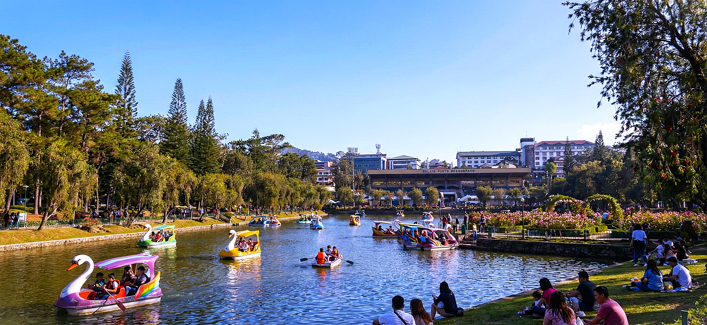
Burnham Park
A relaxing park with a lagoon and greenery.
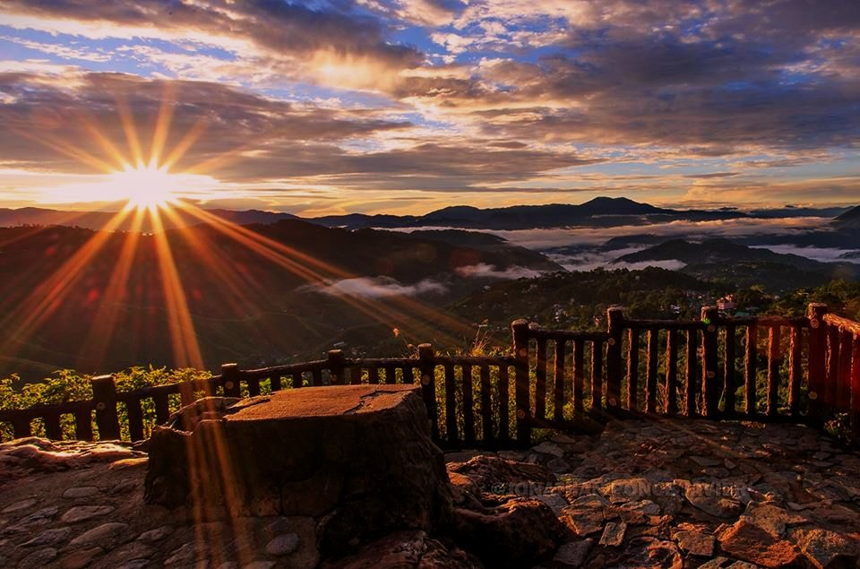
Mines View Park
Famous for mountain views and scenic landscapes.
Camp John Hay
Great for nature walks and relaxing trails.
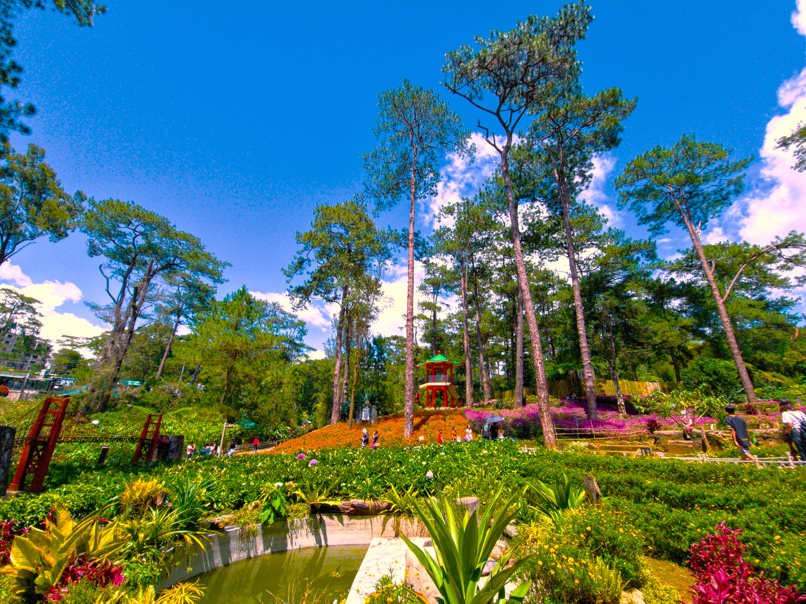
Botanical Garden
A serene garden showcasing local flora and Igorot culture.
Strawberry Farm
Pick fresh strawberries at La Trinidad Valley farm.
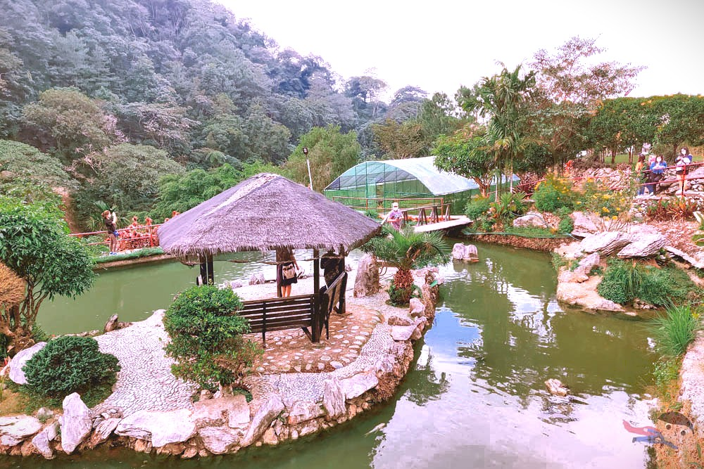
BenCab Museum
World-class art museum by National Artist Ben Cabrera.
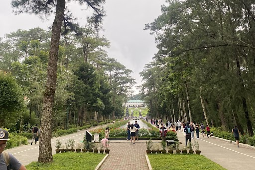
Wright Park
Horse riding and pine-tree lined paths near The Mansion.
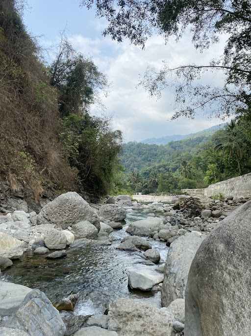
Asin Tuba, Benguet
A relaxing swimming spot in the middle of mountains.
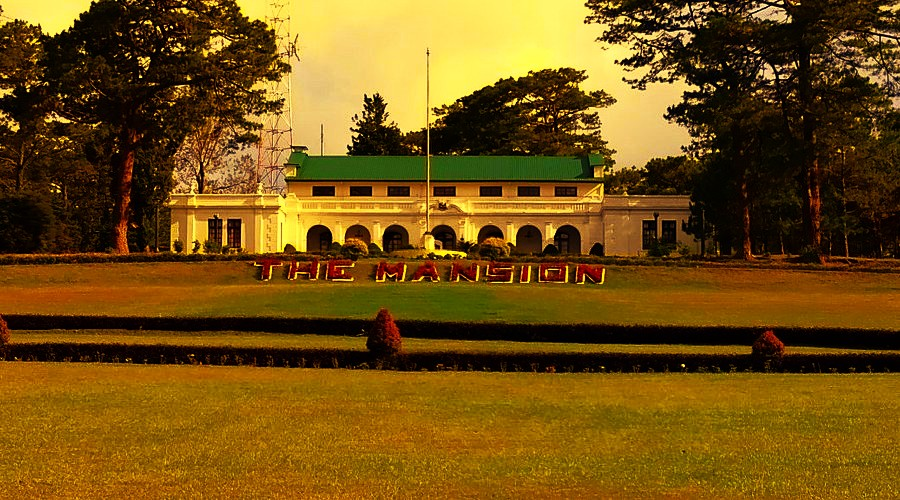
The Mansion
Official summer residence of the Philippine President with grand iron gates.
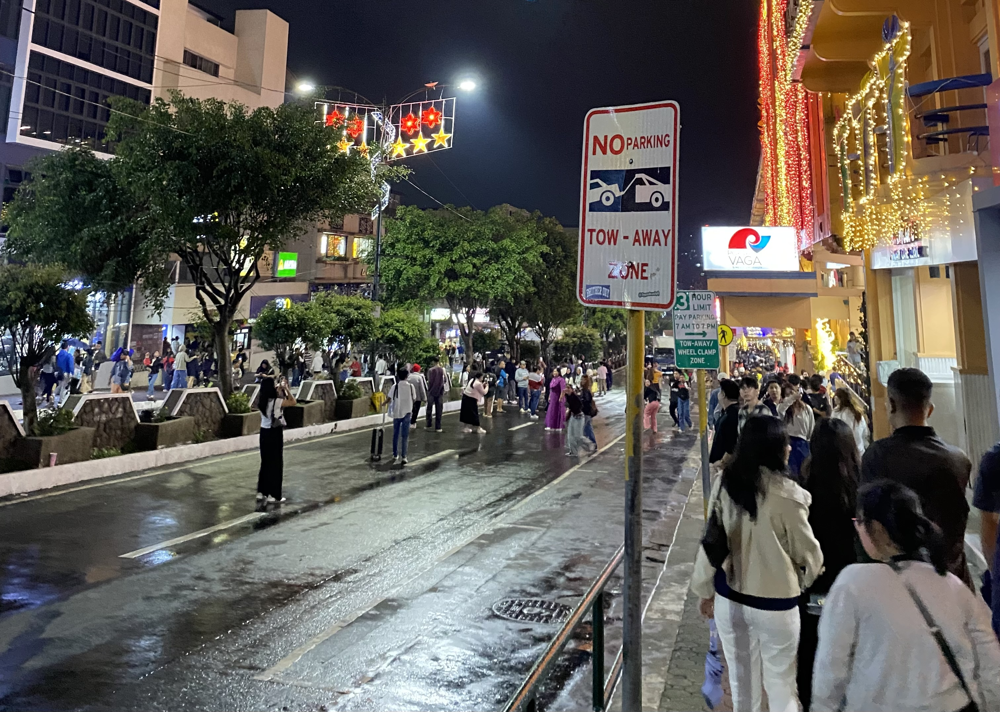
Session Road
The beating heart of Baguio — restaurants, cafés, shops, and festivals.
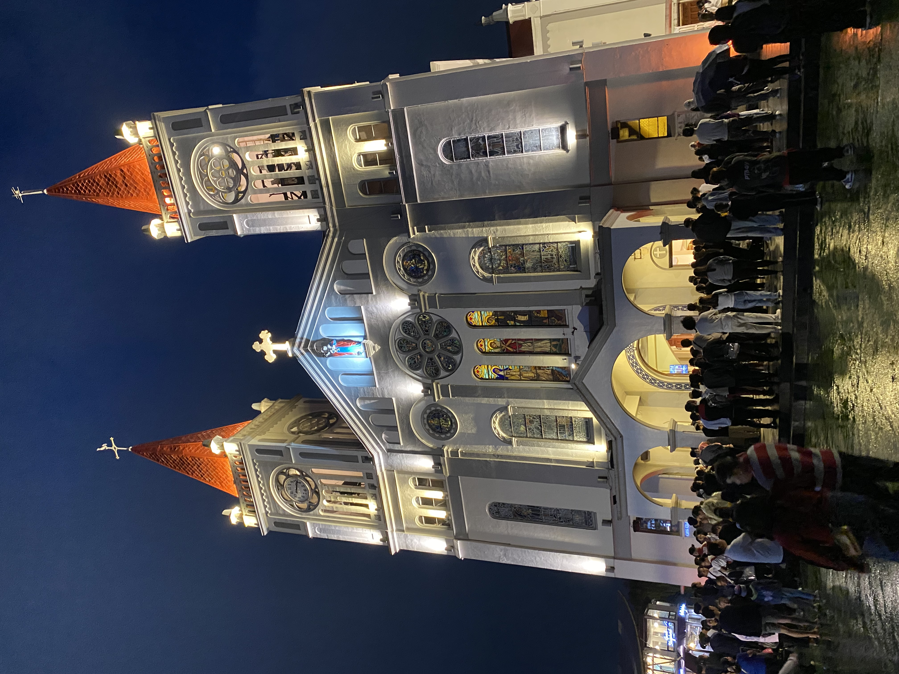
Baguio Cathedral
Iconic pink-roofed cathedral atop a hill overlooking Session Road.
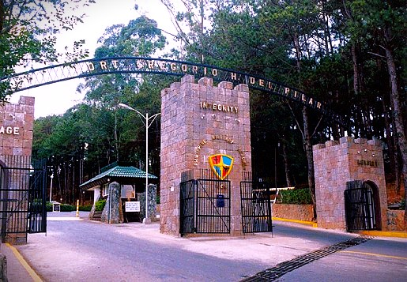
Philippine Military Academy
Historic military school open to visitors — stunning parade grounds.
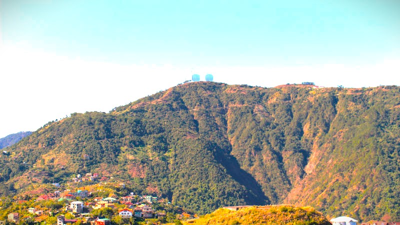
Mt. Santo Tomas
Highest peak near Baguio offering breathtaking sunrise views.
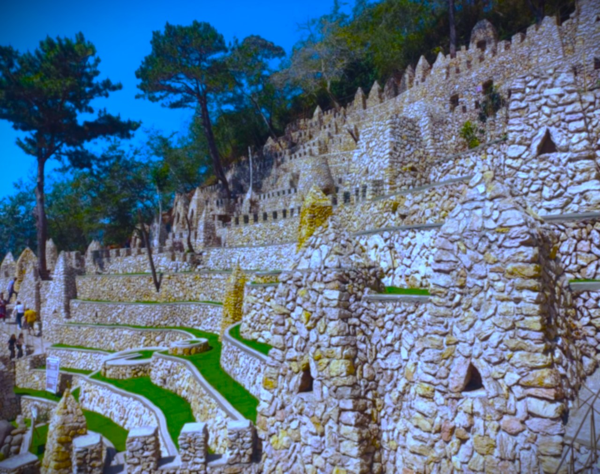
Igorot Stone Kingdom
Cultural theme park celebrating Cordilleran heritage with stone structures.
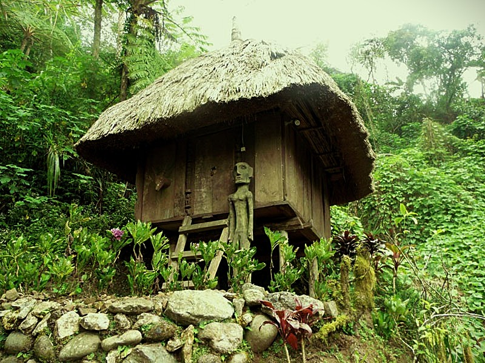
Tam-awan Village
Artists' village featuring Ifugao huts and sweeping valley views.
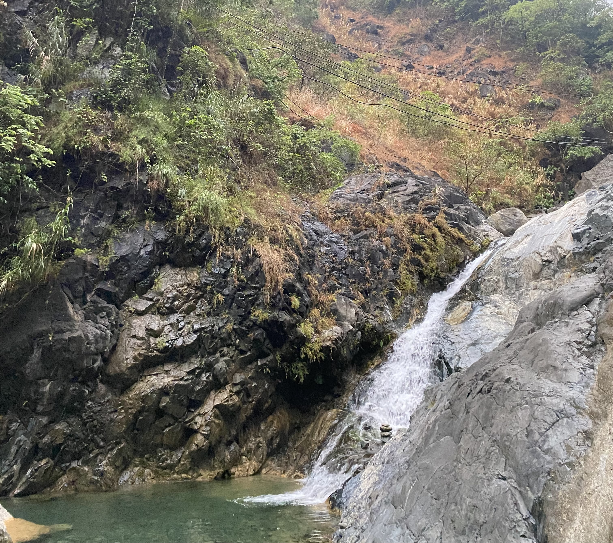
Ataki Falls, Camp 3
Natural river with falls and clear crystal water .
Baguio Night Market
Location: Harrison Road, Baguio City
Open: Every night, 10:00 PM – 2:00 AM
About: The Baguio Night Market stretches along Harrison Road and is one of the most beloved local experiences in the city. You'll find secondhand clothes (ukay-ukay), local street food like taho, kwek-kwek, and isaw, as well as handcrafted souvenirs and accessories at very affordable prices.
Tips: Bring cash, wear comfortable shoes, and arrive early to get the best picks. Watch your belongings in the crowd.
How to get there: From anywhere in Baguio City, take a jeepney or taxi going to Harrison Road or Burnham Park. It’s within walking distance from Session Road and most central hotels.
About: Burnham Park is the central park of Baguio City, designed by American architect Daniel Burnham. It features a man-made lagoon where visitors can rent boats, a flower garden, rose garden, bike rentals, and open picnic areas.
Tips: Rent a bike and ride around the park. Visit the Rose Garden in the morning when flowers are freshest.
How to get there: Located at the city center. Ride any jeepney heading to town proper, Session Road, or Harrison Road. It’s easily accessible by foot from most areas in downtown Baguio.
About: Mines View Park overlooks the old mining town of Itogon and the Cordillera mountain range. The park is lined with souvenir shops selling woodcrafts, silver jewelry, and Baguio ref magnets.
Tips: Go early in the morning for the clearest views before the mist rolls in. Bargain politely at the souvenir stalls.
How to get there: From Baguio City, ride a jeepney bound for Mines View Park (available at terminals near Session Road). Taxis are also readily available for a quicker trip.
About: Camp John Hay is a former American military rest and recreation facility now transformed into a forest reserve and leisure destination. It features pine-forested trails, a golf course, the historical Bell House, restaurants, and a cemetery of negativism.
Tips: The forest trails are free to walk. Grab a coffee at one of the cafes inside and enjoy the cool air surrounded by tall pine trees.
How to get there: From Baguio City, take a jeepney bound for Camp John Hay or Scout Barrio. You can also take a taxi directly to the main entrance.
About: Baguio's Botanical Garden is a peaceful green space that celebrates both the natural beauty of the region and the indigenous Igorot culture. You can find life-sized Igorot village displays, native plant collections, and quiet walking paths.
Tips: Entrance is free! It's a great stop for a quiet morning walk. Look for the native huts that demonstrate traditional mountain province architecture.
How to get there: Ride a jeepney from town heading to Pacdal, Mines View, or Navy Base. Ask the driver to drop you off at Botanical Garden.
About: The La Trinidad Strawberry Farm is one of the most popular side trips from Baguio City. Visitors can walk through rows of strawberry plants and pick their own fresh berries. The farm is especially lush from December to May.
Tips: The picking season peaks from January to March. Wear shoes you don't mind getting muddy.
How to get there: From Baguio City, ride a jeepney bound for La Trinidad (available at Magsaysay Avenue). Ask to be dropped off at Strawberry Farm.
About: The BenCab Museum is a world-class art museum dedicated to the works of National Artist Benedicto Cabrera (BenCab) and other Filipino artists. The museum is built into a hillside surrounded by lush gardens and a small lake.
Tips: Allow at least 2–3 hours to fully explore. The outdoor garden and lake area are just as beautiful as the galleries inside.
How to get there: From Baguio City, ride a jeepney bound for Asin Road. Ask to be dropped off at BenCab Museum. You may need a short tricycle ride for the final stretch.
About: Wright Park is a wide open field famous for horseback riding, located right beside The Mansion. The park features a long reflecting pool lined with tall pine trees, making it one of the most scenic spots in Baguio.
Tips: Try horseback riding early in the morning. Don't forget to visit The Mansion gate nearby for a great photo opportunity.
How to get there: Ride a jeepney bound for Mines View Park or Pacdal from Baguio City. Ask to be dropped off at Wright Park.
About: This swimming spot is nestled in the heart of the mountains and is well known for its refreshingly cold and crystal-clear waters, especially during the hot season.
Tips: Bring towels, as the water can be quite cold especially during the colder months.
How to get there: From Baguio City, ride a jeepney bound for Asin Road. Ask to be dropped off at the nearest resort or falls area. A short tricycle ride may be needed depending on your exact destination.
About: The Mansion is the official summer residence of the President of the Philippines. Its iconic white wrought-iron gate and well-manicured gardens make it one of Baguio's most photographed landmarks. The main house is not open to the public, but the gate area and grounds are a popular photo spot, especially on weekends when guards in formal uniform are on duty.
Tips: Combine this visit with Wright Park next door. Morning visits offer the best lighting for photos. Entrance to the gate area is free.
How to get there: From Session Road or Burnham Park, ride a jeepney with a "Loakan" or "Wright Park" route. Alight near the Wright Park stop — The Mansion gate is a short walk uphill.
About: Session Road is the main commercial thoroughfare and cultural center of Baguio City. Lined with restaurants, coffee shops, boutiques, bookstores, and art galleries, it's the perfect place to experience Baguio's urban energy. Every April during Panagbenga Festival, the road transforms into a parade route filled with floats decorated in flowers.
Tips: Walk the entire stretch (about 1 km) to soak it all in. Visit on a Sunday when part of the road closes to traffic for the "Session in Session" market. Try local coffee at one of the many charming cafés.
How to get there: Session Road is Baguio's central hub — almost all jeepney routes pass through here. From the bus terminal (Dangwa or Victory Liner), take any jeepney marked "Session Road" or "City Center."
Open: Daily, 6:00 AM – 8:00 PM (masses held throughout the day)
About: Our Lady of the Atonement Cathedral — popularly known as Baguio Cathedral — is one of the most recognizable landmarks in the city. Perched on a hill at the top of Session Road, its twin pink spires and bright white facade stand out against the green hillside. The cathedral was built in 1936 and is a spiritual and cultural anchor for the city.
Tips: Climb the long staircase from Session Road for a classic Baguio photo. Attend an early morning mass for a peaceful and inspiring experience. The view from the cathedral steps looking down Session Road is spectacular.
How to get there: Walk up from Session Road — the cathedral is at the top of the road. Alternatively, take any jeepney heading to "Mines View" or "Dominican" and ask to be dropped at the cathedral steps.
Open: Daily, 8:00 AM – 5:00 PM (visitor access; valid ID required)
About: The Philippine Military Academy (PMA) is the premier military university of the Philippines, training the country's future military officers. Visitors are welcome in designated areas, including the parade ground, the chapel, and the PMA museum. The beautifully maintained campus amid the pine forests of Loakan is a sight to behold.
Tips: Bring a valid government-issued ID for entry. Visit during the Homecoming parade (usually February) to see cadets in full dress uniform. Photography restrictions apply inside — always ask before shooting.
How to get there: From Session Road or Burnham Park, ride a jeepney with the "Loakan" route. Tell the driver you're heading to PMA — it's the last major stop on that route.
Open: Best visited at sunrise; accessible by road anytime
About: At 2,260 meters above sea level, Mt. Santo Tomas is the highest peak accessible by vehicle near Baguio City. On clear days, the summit offers a sweeping panorama of the Cordillera mountain range, the Ilocos coastline, and even parts of the South China Sea. A communications tower sits at the summit, and the trails around the mountain are popular among hikers.
Tips: Go before 6:00 AM for a clear sunrise. Bring a jacket — temperatures near the summit can drop to single digits at night. You can rent a motorbike or arrange a jeepney from Baguio proper for the drive up.
How to get there: From Baguio City (Kayang Street terminal), take a jeepney bound for "Sto. Tomas" in Tuba, Benguet. Alternatively, hire a tricycle from the Loakan area or arrange a private vehicle for the summit road.
About: The Igorot Stone Kingdom is a cultural theme park and resort that celebrates the rich heritage of the Cordilleran indigenous peoples. The park features impressive stone structures, tribal sculptures, and architecture inspired by Igorot traditions. It offers hands-on cultural experiences, photo spots, and panoramic mountain views from Outlook Drive.
Tips: Great for family visits and cultural immersion. Wear comfortable walking shoes as the terrain is hilly. Try the local Cordilleran snacks at the park's food stalls.
How to get there: From Session Road, take a jeepney heading toward "Outlook Drive" or "Dominican Hill." Ask the driver or conductor to drop you off at Igorot Stone Kingdom — it's along the main Outlook Drive road.
About: Tam-awan Village is a living arts and culture village set on a hillside with breathtaking views of the Baguio valley. It features authentic Ifugao and Kalinga huts brought from mountain provinces, art galleries showcasing indigenous and contemporary Filipino art, and workshops for visitors. Local artists often set up here and the village regularly hosts cultural events and performances.
Tips: Check their Facebook page for upcoming art shows or workshops. Visitors can stay overnight in the traditional huts for a unique experience. The valley view is best in the late afternoon.
How to get there: From Session Road, take a jeepney to "Trancoville" or "Dominican." Then ride a tricycle from there to Tam-awan Village — it's about 10–15 minutes uphill from the main jeepney route.
Location: Ataki falls, Camp 3, Tuba, Benguet (along Kennon Road, near Baguio City)
Open: Accessible daily; best visited during daylight hours (no entrance fee for general area)
About: Camp 3 in Tuba, Benguet is a historic and scenic stop along Kennon Road, known for its cool mountain air, lush pine surroundings, and proximity to iconic landmarks like Lion’s Head. It serves as a gateway between the lowlands and Baguio City, offering visitors a peaceful resting spot with views of forested slopes and winding mountain roads.
Tips: Bring a jacket as the area can get chilly, especially in the early morning or late afternoon. Be cautious when walking near the roadside, as vehicles frequently pass through Kennon Road. It’s a great quick stop for photos and fresh air.
How to get there: From Baguio City, take a van or jeep bound for Kennon Road or Pangasinan via Kennon. Ask to be dropped off at Camp 4. If coming from the lowlands, it’s one of the last stops before reaching Baguio. Private vehicles can easily access the area via Kennon Road.